ARTICLES
Google Cloud Directory Sync with OpenLDAP
This is a tutorial on how to provision users and groups from a local LDAP server (OpenLDAP) into your G Suite domain. Any users and groups present in your local LDAP server will get created in G Suite. Once your users are present in your G Suite domain, you can authorize these users and groups access to Google Cloud Resources and other G Suite features.
This article is simply a tutorial on the simplified steps you would take for your on-prem directory server (ActiveDirectory, OpenLDAP). The Directory Sync utility overwrites any existing G Suite users and groups in favor of your local LDAP. As this is just a tutorial, only execute the ‘dry-run’ capabilities. You will need Domain Admin user privileges to your G Suite domain.
This sample will only sync the basic Users and Groups objects from your LDAP to G Suite.
Some references on the Directory Sync tool: * https://support.google.com/a/answer/106368?hl=en * https://support.google.com/a/answer/6162412?hl=en * https://support.google.com/a/topic/2679497 * https://support.google.com/a/answer/6258071?hl=en
If you are a Google Cloud Platform user, consider migrating your organization after you have setup Directory Sync * https://cloud.google.com/iam/docs/faq#how_do_i_use_google_groups_with_iam * https://cloud.google.com/resource-manager/docs/overview
OpenLDAP configuration
This tutorial runs a Docker container with a configurable OpenLDAP server that you can setup and load sample data reflecting your LDAP hierarchy. The the sample LDIF file is very basic and enables the domain dc=example, dc=com with users under ou=users and groups under ou=groups.
You can edit the slapd.conf file and import.ldif file to map to your users and directory structure. You will need to initialize and load the LDIF files once the container starts up as shown below.
NOTE: I’ve made some specific modifications to the objectclass mappings for a users groups display name for simplicity.
Download the sample Dockerfile and LDAP configuration
DockerfileInitializes a plain OpenLDAP server on secure (ldaps://) and insecure (ldap://) ports.slapd.confOpenLDAP configuration that defines the root password, baseDN and ACLs to applyimport.ldifSample users and groupsCA_crt.pem,ldap_crt.pem,ldap_key.pemSelf-signed certificate and chain forldaps://
Start the LDAP server
The first step is to setup the local LDAP server. You will need to clone the gitrepo to aquire the sample Dockerfile and ldap configurations.
Build the container
docker build -t myldap .
Start the container
docker run -p 1389:389 -p 1636:636 myldap slapd -h "ldap://0.0.0.0:389 ldaps://0.0.0.0:636" -d 3 -f /ldap/slapd.conf
Install LDAP utilities on the host
Either: Install some LDAP utilities you will need on the docker host
apt-get install ldap-utils
Alternatively, you can install an LDAP UI like Apache Directory Studio.
Initialize your LDAP server
Load the sample data
ldapadd -v -x -D "cn=admin,dc=example,dc=com" -w mypassword -H ldap://localhost:1389 -f import.ldif
If you used Apache Directory Studio, you can load and execute the .ldif file directly (“LDAP–>New LDIF FIle”) after you establish a connection:
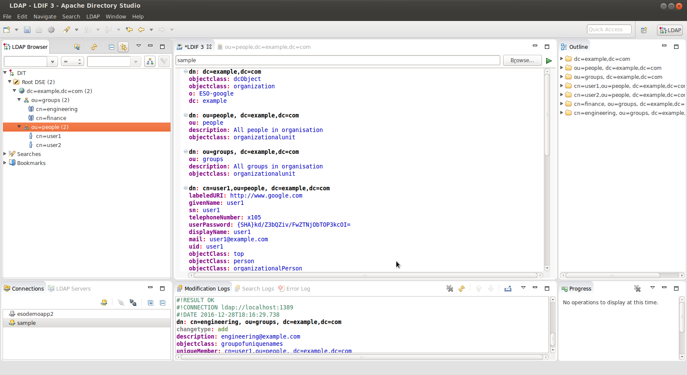
Verify via query
ldapsearch -v -x -D "cn=admin,dc=example,dc=com" -w mypassword -b "ou=people,dc=example,dc=com" -H ldap://localhost:1389
If you use Directory Studio, you can browse the imported LDAP structure in the console directly.
Setup dry-run Google Directory Sync
Once the LDAP server is running, we need to run the Directory Sync utility.
Again only run the Directory Sync in dry-run mode!!
Download and Start the Directory Sync utility Download: https://support.google.com/a/answer/6120989 Launch:
$ GoogleCloudDirSync/config-manager
Setup the Google Domain Configuration
You need to be domain super user to syn and run this utility: 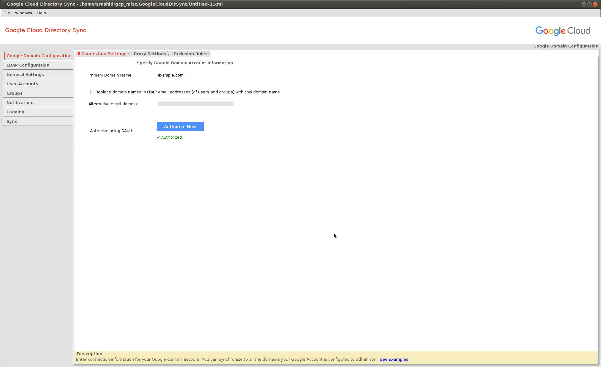
Connect to the LDAP server
Connect as cn=admin,dc=example,dc=com . The default password is mypassword .
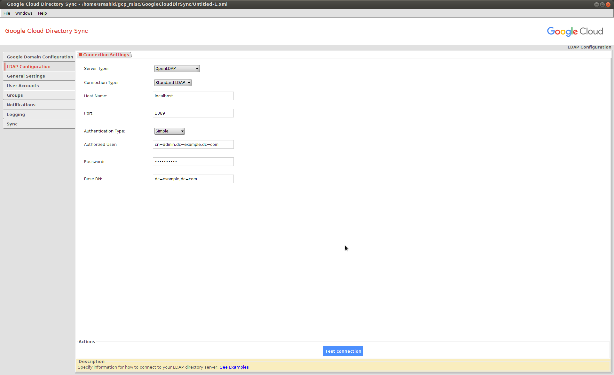
If you are using ldaps://, you need to add in the certificate chain first:
cd GoogleCloudDirSync/jre
$ keytool -keystore lib/security/cacerts -storepass changeit -import -file path_to_your/ldap_crt.pem -alias mydc
$ keytool -keystore lib/security/cacerts -storepass changeit -import -file path_to_your/CA_crt.pem -alias myca
Select Users and Groups to sync
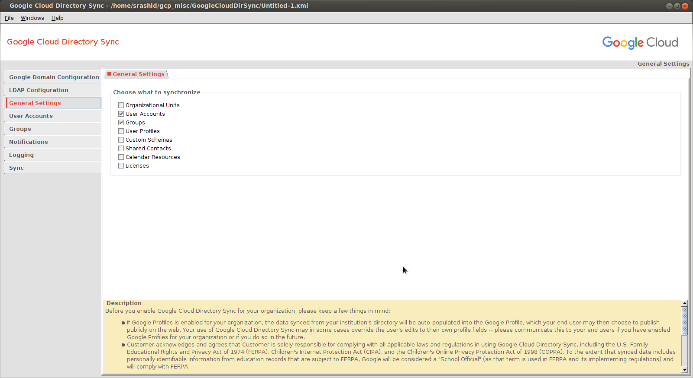
User Configuration
I’ve made some specific maps for LDAP attributes to G Suite attributes:
cn-> Unique identifer attributemail-> Email address to usegivenName-> User’s first namesn-> User’s last nameuserPassword-> SHA1 format for the user’s local LDAP password
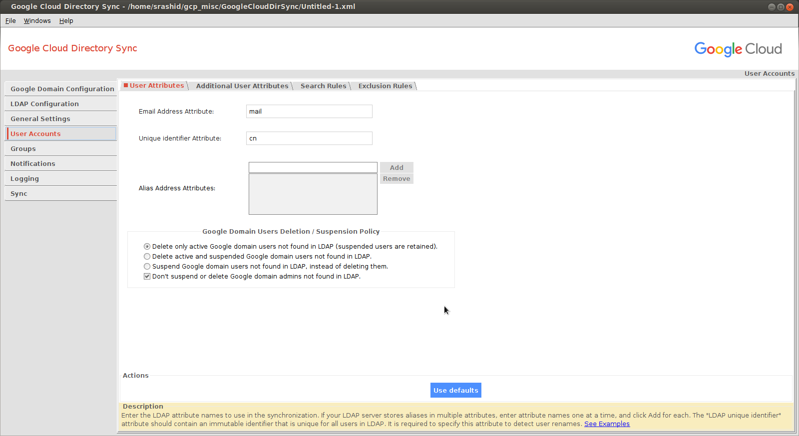
The users in LDAP are found under ou=People,dc=example,dc=com and the primary identifier is cn
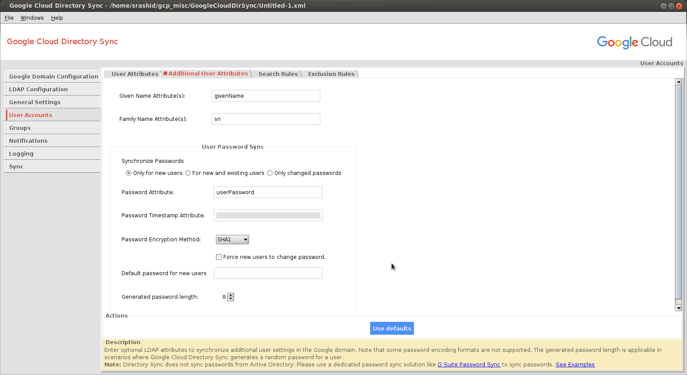
The SHA format for the password can be derived using sample utilities bundled with openldap:
slappasswd -h {SHA} -s mypassword
{SHA}kd/Z3bQZiv/FwZTNjObTOP3kcOI=
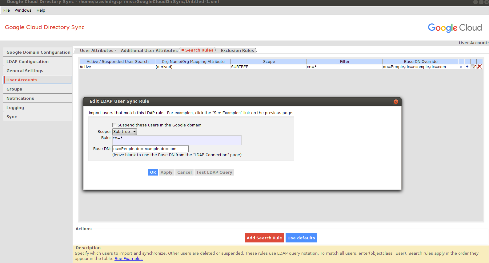
Groups Configuration
I did not want to override the default openldap schema so I ended up using the description attribute of objectclass: groupofuniquenames
as the attribute the utility will use to infer the Group Email Address:
- Group Email Address Attribute:
description
Meaning the LDAP’s description field for a groupofuniquenames denotes the email address to provision in G Suite.
You can search for the groups by looking in the subtree for:
(&(objectClass=groupOfUniqueNames)(cn=*))
For example:
dn: cn=engineering, ou=groups, dc=example,dc=com
cn: engineering
objectclass: groupofuniquenames
description: engineering@example.com
uniqueMember: cn=user1,ou=people, dc=example,dc=com
uniqueMember: cn=user2,ou=people, dc=example,dc=com
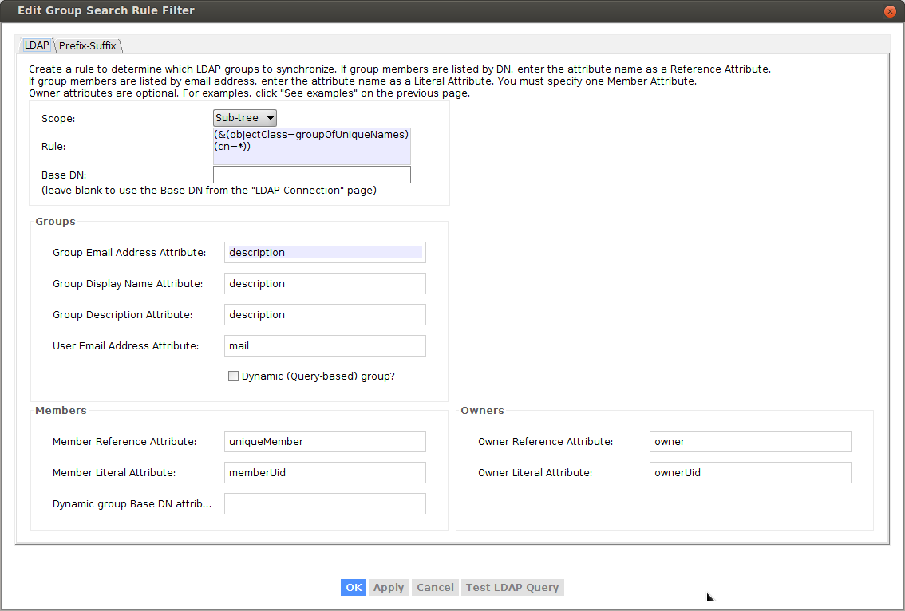
To verify, select “Test Query” button:
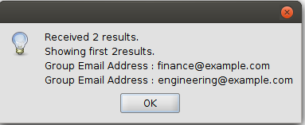
Execute Dry-Run Sync
Now that you are all setup, click the ‘Simulate sync’ button to see what would happen.
REMEMBER TO SELECT “SIMULATE SYNC”
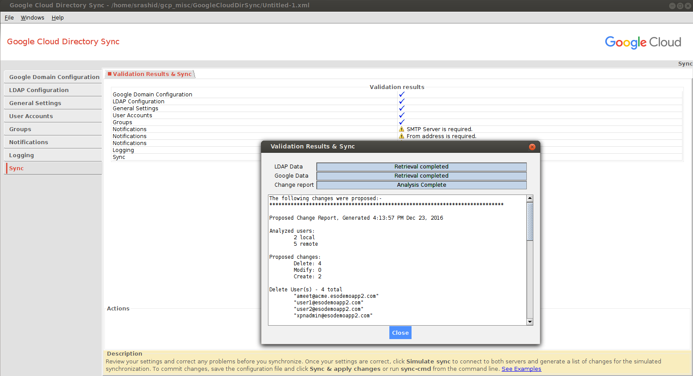
If had existing users already in my apps domain and I tried to import new ones, the reconciliation favored the local LDAP (meaning it would add local ldap and delete existing accounts~)
Execute Sync
If you are confident on the sync setup, you can initiate the full synchronization. Once the users and groups are committed, you can see them in the Google Apps domain console.
Note, the setup does not sync or overwrite the domain admin users.
You can also backup/export your existing users list first to a .csv file prior to running the full sync.
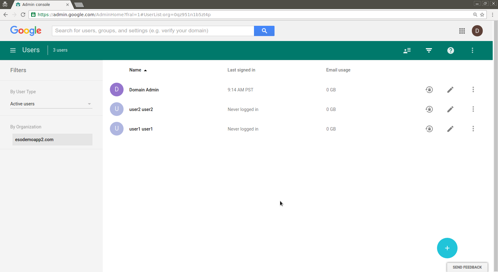
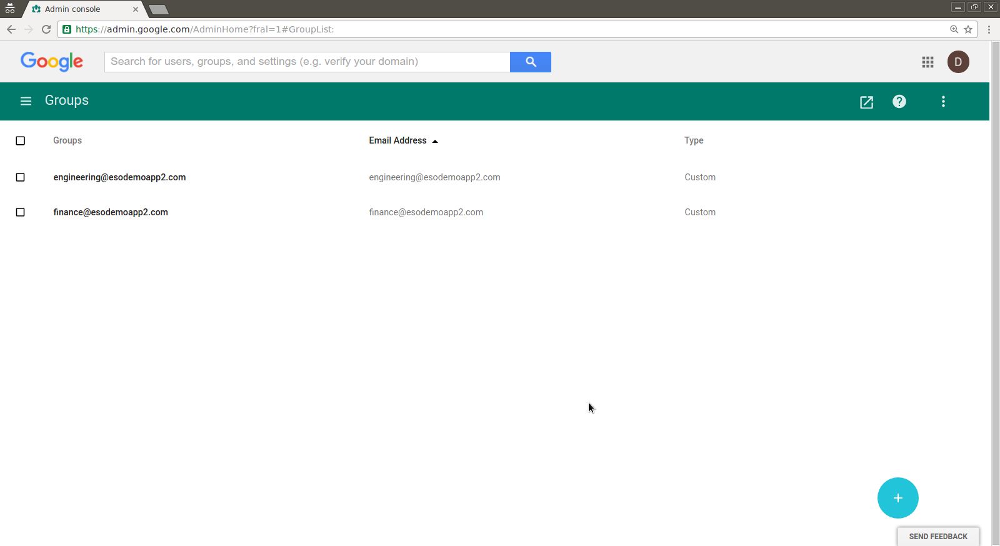
The following changes were applied on the Google domain:-
*****************************************************************************
Change Status Report, Generated 10:09:17 AM Dec 28, 2016
Successful user changes:
Deleted: 0
Modified: 0
Created: 2
Failures:
Delete: 0
Modify: 0
Create: 0
Created 2 new users
User: "user1@example.com"
Local key "dXNlcjE"
Given name "user1"
Family name "user1"
Set SHA-1 password hash
User: "user2@example.com"
Local key "dXNlcjI"
Given name "user2"
Family name "user2"
Set SHA-1 password hash
Successful group changes:
Deleted: 0
Modified: 2
Created: 2
Failures:
Delete: 0
Modify: 0
Create: 0
Successfully modified 2 groups
Group: "finance@example.com"
Added user user1@example.com
Group: "engineering@example.com"
Added user user1@example.com
Added user user2@example.com
Created 2 new groups
Group: "engineering@example.com"
Group: "finance@example.com"
The following changes were proposed:-
*****************************************************************************
Proposed Change Report, Generated 10:09:16 AM Dec 28, 2016
Analyzed users:
2 local
1 remote
Proposed changes:
Delete: 0
Modify: 0
Create: 2
Create - 2 total
New user 1: "user1@example.com"
Non-address primary key "dXNlcjE"
Given name "user1"
Family name "user1"
SHA1 password
0 aliases
New user 2: "user2@example.com"
Non-address primary key "dXNlcjI"
Given name "user2"
Family name "user2"
SHA1 password
0 aliases
Analyzed groups:
2 local
0 remote
Proposed changes:
Delete: 0
Modify: 2
Create: 2
Create Group(s) - 2 total
"engineering@example.com"
"finance@example.com"
Modify (all proposed changes) - 2 total groups affected
Modify group 1: "engineering@example.com"
Add address "user1@example.com"
Add address "user2@example.com"
Modify group 2: "finance@example.com"
Add address "user1@example.com"
Directory Sync via Admin API
You can also script the provisioning and management of users and groups via the G Suite APIs such as Directory API
#!/usr/bin/python
from apiclient.discovery import build
import httplib2
from oauth2client.service_account import ServiceAccountCredentials
from oauth2client.client import GoogleCredentials
import logging
import json
import sys
from apiclient import discovery
import oauth2client
from oauth2client import client
from oauth2client import tools
scope = 'https://www.googleapis.com/auth/admin.directory.user'
credentials = ServiceAccountCredentials.from_p12_keyfile('adminapi@fabled-ray-104117.iam.gserviceaccount.com',
'project1-5fc7d442817b.p12',
scopes=scope)
credentials = credentials.create_delegated('admin@example.com')
http = httplib2.Http()
http = credentials.authorize(http)
service = discovery.build('admin', 'directory_v1', http=http)
results = service.users().list(customer='C023zw2x7', domain='example.com').execute()
users = results.get('users', [])
print json.dumps(users, sort_keys=True, indent=4)
for u in users:
print json.dumps(u['primaryEmail'], sort_keys=True, indent=4)